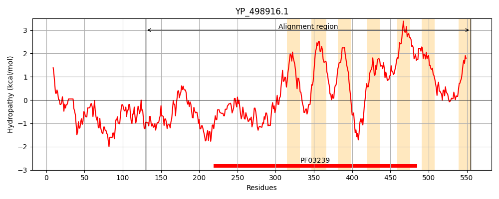
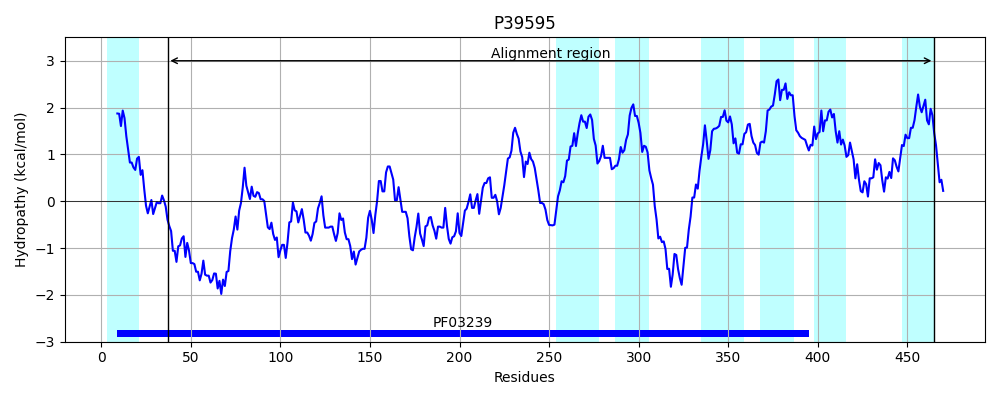
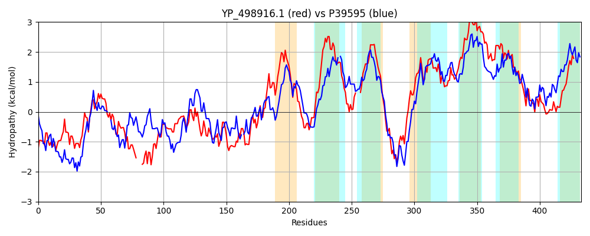

Hit Accession: P39595
Hit TCID: 2.A.108.2.5
Hit Description: gnl|BL_ORD_ID|10283 gnl|TC-DB|P39595|2.A.108.2.5 Ferrous iron permease EfeU OS=Bacillus subtilis (strain 168) GN=efeU PE=1 SV=2
Mach Len: 433
e:0.000000
Query TMS Count : 7
Hit TMS Count: 7
TMS-Overlap Score: 4.850000
Predicted Substrates:CHEBI:5974;iron atom
BLAST Alignment:
Score: 444 , Bit scores: 175 bits, E-value: 9.9e-49, Alignment length: 433, Percentage identity: 24
Query: 130 MTKAIKDKNKAELESLNNSLNQIWTSNETVIRNYDANQYGQIEVALLQLRIAIHKSPLDTAKVSHAWTTFKSNIDHVDK----KSNTSANDQYHVSQLNDALEKAIKAIDDNQLSDADAALTHFIETWPYVEGQIQTKDGALYTKIEDKIPYYQSVLDEHNKAHVKDGLVDLNNQIKEVVGHSYSFVDVMIIFLREGLEVLLIVMTLTTMTRNVKDKKGTASVIGGAIAGLVLSIILAITFVETLGNSGILRES---MEAGLGIVAVILMFIVGVWMHKRSNAKRWNDMIKNMYANAISNGNLVLLATIGLISVLREGVEVIIFYMGMIGELATKDFIIGIALAIVILIIFALLFRFIVKLIPIFYIFRVLSIFIFIMGFKMLGVSIQKLQLLGAMPRHVIEGFPTINWLGFYPSYEPLIAQGAYIMVVAILI 555
M K++KD + + ++ W E I+ + + + +++ + + ++ D K+ S+++ + K +S + ++ +L+ + I+ QL +A +A+ + + +W VEG + ++ YT E+ + ++ + H + V + ++ ++ + SYS+ D +I +REG+E LL++ L TMT+ + + + + GGA AG+ +S+ I V L +S + E+ + G+++ +++ VGVW+H+ ++ +W + I + A+ +L+ A I ++V+REG+E +IF++G++G+L + I G A +++L+I +L + IP+ F + + M K LG + LQL G +P P+++ LG YPS I Q ++ + I +
Sbjct: 37 MIKSVKDGDMDSAQQTFDTFKAKWKKEEPSIKKENLSSHSEMDANIAMISLSFINQ--DARKLKTQLEELASHLETYQQAVVLKKTSSGQSRASLTAYIQSLKDTKQFIEKKQLDEASSAIDNLVTSWLAVEGDVVSQSKEAYTTSEENLALMKAEIGSHPEK-VSKQIDEMIQLLEPIASSSYSWWDAALIPVREGMEALLVIGALLTMTKKARVTRSSTWIWGGASAGMAVSLAAGIG-VTVLFSSSVFGENNFLLGGVTGVLSAVMLLYVGVWLHRNASMDKWREKINIQKSQALKKRSLLSFALIAFLAVVREGLETVIFFIGLVGKLPLTELIGGTAAGLIVLVIVGVLMIKLGMRIPLKPFFLLSMAVVLYMCVKFLGTGVHSLQLAGILPSDAESWLPSVSVLGIYPSVYSTIPQMLILLFLLIAL 465 | Protein Hydropathy Plots: |
|---|
|  |  |
Pairwise Alignment-Hydropathy Plot:
|
|---|
|  |